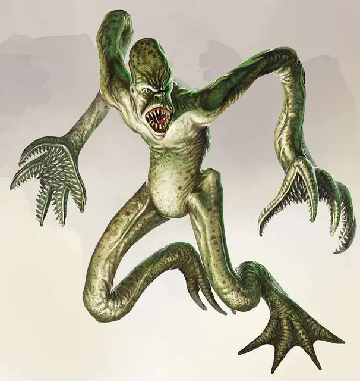

Душитель
Choker
Маленькая Аберрация, хаотично-злая

Класс Доспеха 16 (природный доспех)
Хиты 13 (3к6 + 3)
Скорость 30 футов
| мод | спас | ||
|---|---|---|---|
| СИЛ | 16 | +3 | +3 |
| ЛОВ | 14 | +2 | +2 |
| ТЕЛ | 13 | +1 | +1 |
| мод | спас | ||
|---|---|---|---|
| ИНТ | 4 | −3 | −3 |
| МДР | 12 | +1 | +1 |
| ХАР | 7 | −2 | −2 |
Навыки Скрытность +6
Чувства тёмное зрение 60 футов, пассивное Восприятие 11
Языки Глубинная речь
Опасность 1 (200 опыта)
Бонус мастерства +2
Среда обитания Горы, Лес, Подземье
Особенности
Искажённое проворство (Перезарядка после короткого или продолжительного отдыха). Душитель совершает дополнительное Действие в свой ход.
Паучье лазание. Душитель может карабкаться по сложным поверхностям, включая вверх ногами по потолку, без необходимости проходить какие-то проверки.
Действия
Мультиатака. Душитель совершает две атаки щупальцем.
Щупальце. Рукопашная атака оружием: +5 к попаданию, досягаемость 10 футов, одна цель. Попадание: 5 (1к4 + 3) дробящего урона плюс 3 (1к6) колющего урона. И если цель Большого или меньшего размера, она становится схваченной (сложность освобождения 15). Пока цель схвачена, она становится опутанной, и душитель не может использовать это щупальце по другой цели. У душителя два щупальца. Если эта атака стала критической, цель в добавок ко всему не сможет дышать или говорить до момента окончания захвата.
Описание
Душитель (из "Мертвых в Тэе") - злобное существо из другого мира, которое использует скрытность и удушение для уничтожения своих врагов. Две длинные руки, выступающие из его тощего тела, действуют как щупальца, которые позволяют чокеру наносить удары на расстоянии. Основная тактика этого существа заключается в том, чтобы схватить жертву за горло и удерживать до тех пор, пока она не умрет.